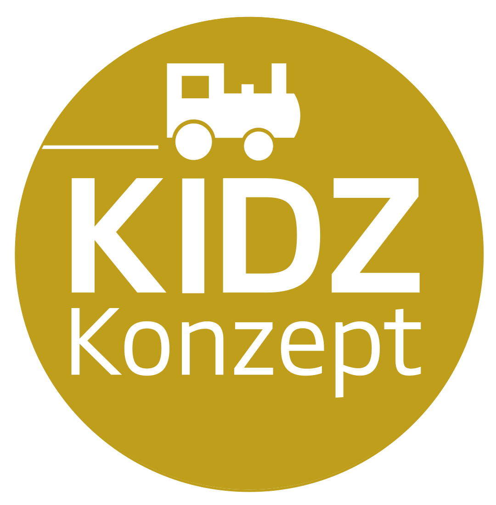
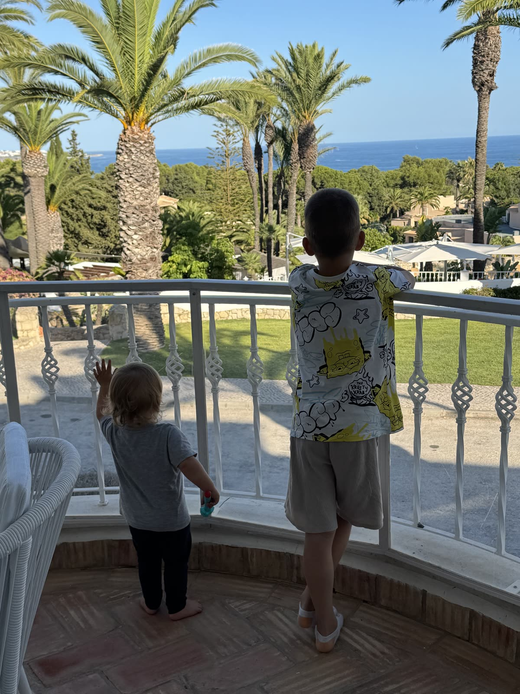
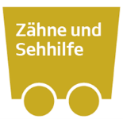
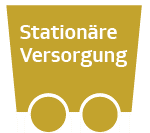
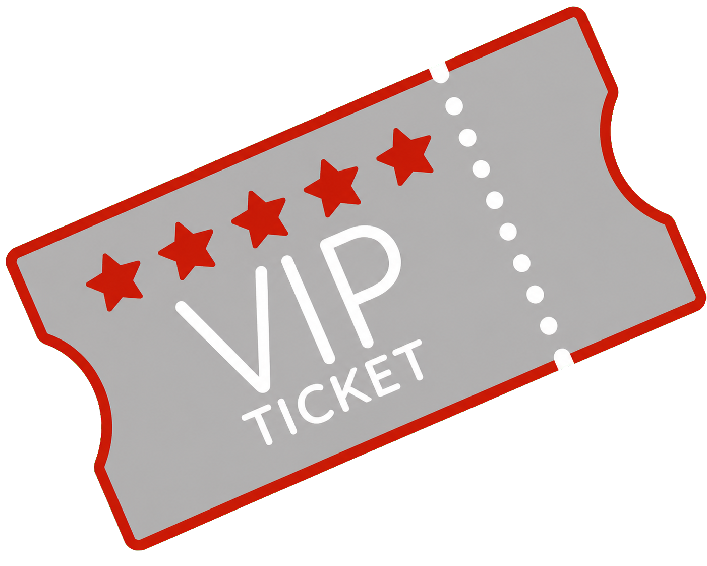
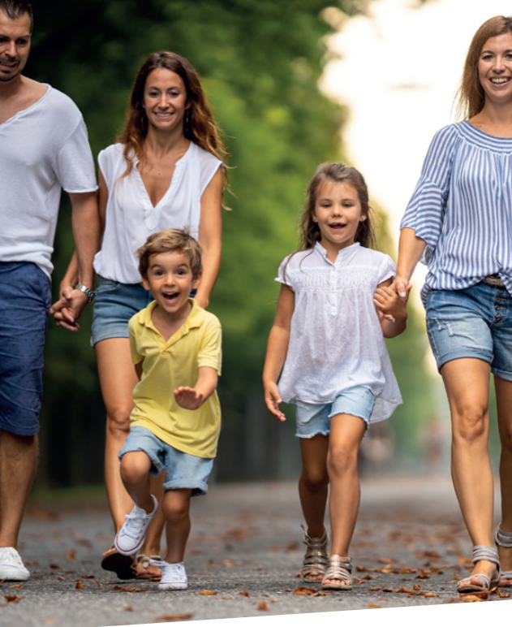

Erst verstehen
Finanzielle Kompetenz schafft die Grundlage, damit ein Kind später selbstbestimmt entscheiden kann.

Kinderleicht in die ZukunftEin Elternkonzept vom Team Wachsbleiche
KIDZ verbindet Vermögensaufbau, Gesundheit und Absicherung zu einem Weg, den Eltern heute verstehen und Schritt für Schritt gestalten können.

Der Einstieg ins KIDZ-Konzept
KIDZ beginnt nicht mit einer Lösung. Es beginnt damit, dass Kinder Geld, Wünsche, Sparen und Entscheidungen im Alltag verstehen lernen. Für Eltern kommt danach der frühe Blick auf die Gesundheit ihres Kindes.
Finanzielle Kompetenz schafft die Grundlage, damit ein Kind später selbstbestimmt entscheiden kann.
Der heutige Gesundheitszustand kann als Ausgangspunkt für spätere Möglichkeiten wichtig sein. Die U4 ist dabei ein früher Orientierungspunkt.
Die Vermögensaufbau-Lok macht aus dem frühen Verständnis einen ersten sichtbaren Baustein.
Dann fährt der KIDZ-Zug los
Die Vermögensaufbau-Lok beginnt. Dahinter folgen Gesundheit und die weiteren Bausteine für den Kinderalltag. Tippen Sie auf den Zug, um die Fragen dahinter zu sehen.
Vermögensaufbau
Ein kleiner Betrag bekommt eine große Wirkung, wenn er früh beginnt. Eltern legen den Grundstein, später kann das Kind selbst weiterbauen.
Warum frühes Verstehen zählt

Vermögensaufbau
Eltern legen den Grundstein, das Kind macht später einfach weiter. Der Unterschied liegt nicht im Betrag, sondern in der Zeit, die vorher schon gelaufen ist.
18 Jahre lang 55 Euro im Monat. Eingezahlt werden 11.880 Euro, daraus werden rechnerisch 25.008 Euro zum 18. Geburtstag.
Es spart dieselben 55 Euro weiter bis zum 67. Lebensjahr. Aus dem Startkapital der Eltern werden dabei rechnerisch 1.077.120 Euro.
Beginnt das Kind erst mit 18 bei null, kommt es mit denselben 55 Euro auf 287.391 Euro.
So groß ist der Unterschied allein dadurch, dass in den ersten 18 Jahren schon etwas gelaufen ist.
Beispielrechnung mit 7,3 Prozent Wertentwicklung pro Jahr, monatlich vorschüssig, Zinsen werden angesammelt. Sie dient der Veranschaulichung des Zinseszinseffekts und ist keine Zusage. Kosten, Steuern und Inflation sind nicht berücksichtigt, die tatsächliche Entwicklung kann deutlich abweichen.

Zähne und Sehhilfe
Stationäre VersorgungDas eigentliche Thema
Ein Satz, den die meisten Eltern nie gelesen haben. Setzen Sie den Namen Ihres Kindes ein und lesen Sie ihn noch einmal.
§ 12 Absatz 1 Sozialgesetzbuch V, Wirtschaftlichkeitsgebot
Die Leistungen für Ihr Kind müssen ausreichend, zweckmäßig und wirtschaftlich sein; sie dürfen das Maß des Notwendigen nicht überschreiten. Leistungen, die nicht notwendig oder unwirtschaftlich sind, können Versicherte nicht beanspruchen, dürfen die Leistungserbringer nicht bewirken und die Krankenkassen nicht bewilligen.
Wortlaut nach § 12 Absatz 1 SGB V, ergänzt um den Namen. Gesetzestext ansehen
Es gibt eine Klinik, die auf genau diese Erkrankung spezialisiert ist. Sie liegt zwei Stunden entfernt. Die Kasse zahlt das nächstgelegene Haus, das für die Behandlung geeignet ist. Wer ohne zwingenden Grund ein anderes wählt, dem können die Mehrkosten auferlegt werden. Dass ein Elternteil mit aufgenommen wird, gilt nur dann als Leistung, wenn es medizinisch notwendig ist. Und die Behandlung durch den erfahrensten Arzt des Hauses oder ein Zimmer, in dem man als Familie zur Ruhe kommt, sind Wahlleistungen. Also: privat.
Beim Kieferorthopäden fällt dasselbe Prinzip nur früher auf. Eine Zahnspange zahlt die Kasse erst ab einer ausgeprägten Fehlstellung, den Stufen 3 bis 5 der kieferorthopädischen Indikationsgruppen. Bei bewilligter Behandlung strecken Eltern zunächst 20 Prozent vor und bekommen sie erst nach vollständigem Abschluss zurück. Unsichtbare Schienen, hochwertigere Materialien oder eine professionelle Reinigung sind nicht notwendig im Sinne des Gesetzes und stehen deshalb auf der eigenen Rechnung.
Grundlagen: § 39 SGB V zur Krankenhausbehandlung und den Mehrkosten bei freier Klinikwahl, § 11 Absatz 3 SGB V zur Mitaufnahme einer Begleitperson, § 29 SGB V mit der Richtlinie zu den kieferorthopädischen Indikationsgruppen. Was im Einzelfall übernommen wird, entscheidet die Krankenkasse.
Ausreichend ist nicht dasselbe wie das Beste, was möglich wäre. Genau da setzt KIDZ an.
Möglichkeiten für später
Bei einem Kind geht es nicht um einen Beruf oder um Einkommen. Es geht um seine Gesundheit und um die Frage, welche Möglichkeiten später noch offenstehen.
Diagnosen, Behandlungen oder Beschwerden können später beeinflussen, welche Absicherung noch möglich ist. Deshalb lohnt sich der Blick, solange nicht bereits etwas entschieden werden muss.
Bei bestimmten Wegen kann ein Einstieg bereits rund um die U4 möglich sein. Ob das im Einzelfall passt und welche Voraussetzungen gelten, wird immer fachlich geprüft.
KIDZ stellt keine Tarife in den Mittelpunkt. Zuerst geht es um Ihr Kind, Ihre Wünsche und darum, welche Türen Sie möglichst offenhalten möchten.
Was „Gesundheit früh sichern“ hier bedeutet: Die Gesundheit selbst lässt sich nicht einfrieren. Gemeint ist, dass bei bestimmten Absicherungswegen der heutige Gesundheitszustand als Ausgangspunkt für spätere Optionen dienen kann. Wir sprechen deshalb zuerst über Ihr Kind. Erst danach, und nur wenn Sie es möchten, wird geprüft, welche konkrete Lösung fachlich passen könnte.
Gesundheit
Mehr Möglichkeiten für Ihr Kind, bevor Gesundheit plötzlich zum entscheidenden Thema wird.

Gesundheitszustand
Der heutige Gesundheitszustand kann später eine wichtige Rolle spielen. KIDZ macht diesen Zeitpunkt verständlich, ohne daraus ein Verkaufsgespräch zu machen.
Zähne und Sehhilfe
Bei Zähnen, Sehhilfen und Behandlungen geht es um die Frage, welche Wahl Ihre Familie später selbst treffen möchte.
VIP heißt bei KIDZ nicht Luxus. Es bedeutet, als Familie mehr Möglichkeiten zu haben, wenn Gesundheit wichtig wird.
Von Eltern für Eltern
Eltern empfehlen KIDZ nicht weiter, weil sie Daten sammeln oder etwas verkaufen. Sie teilen einen Gedanken, der ihnen selbst geholfen hat.
Sie erhalten nur den Link zu dieser Seite.
Keine Anmeldung, keine Kinderdaten, kein Anruf.
Kontakt entsteht erst, wenn Sie einen Weg wählen.

Der KIDZ-Elternabend
Keine Produktshow. Kein Entscheidungsdruck. Die acht Bausteine werden an Alltagssituationen erklärt, danach bleibt Zeit für Ihre Fragen.